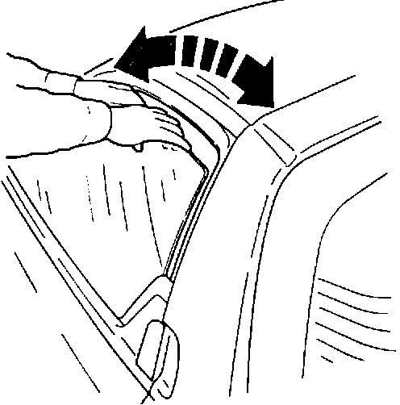
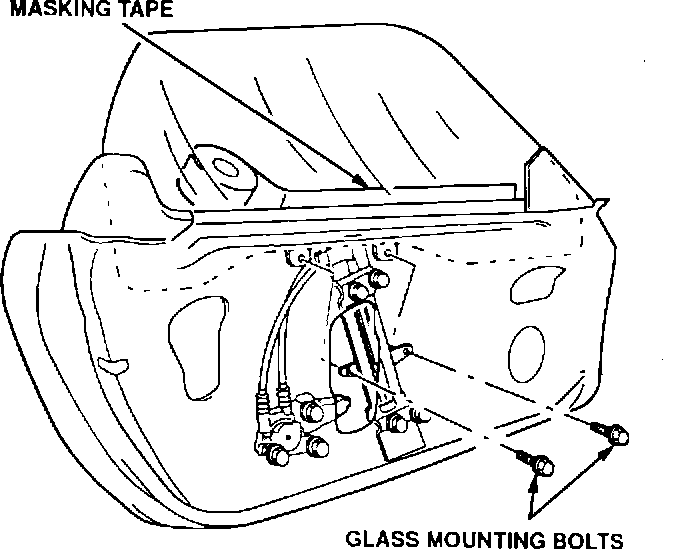
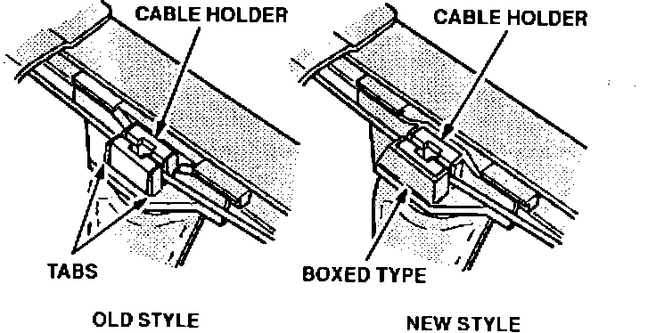
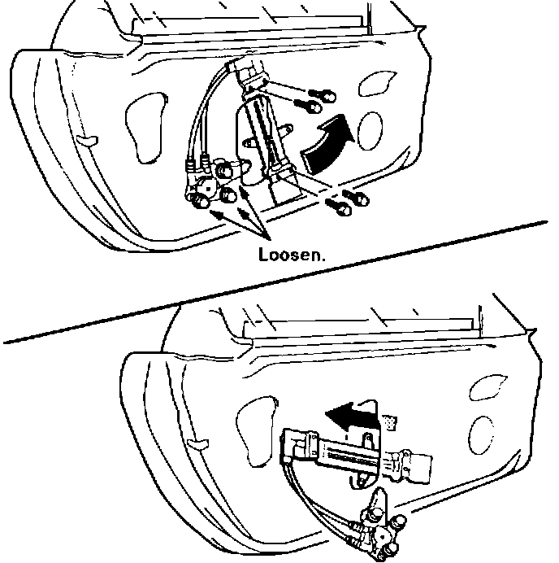
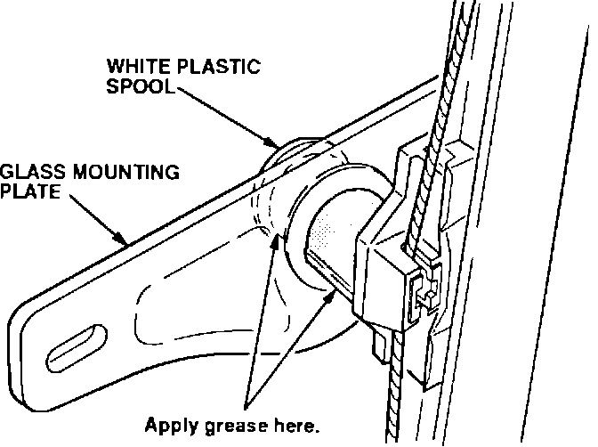
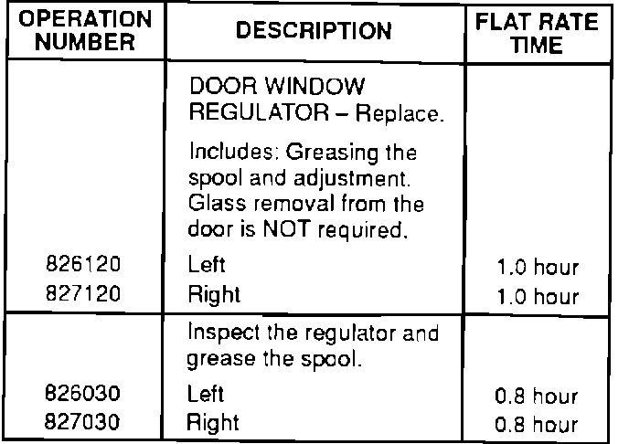

Window Regulator - Popping Noise
BULLETIN NO.93-004
VIN APPLICATION
ALL
MODEL
NSX
YEAR
1991-93
March 9, 1993
Popping Noise From the Window Regulator
SYMPTOM
A popping noise from the window regulator when raising or lowering the window.
PROBABLE CAUSE
The white plastic spool that connects the glass mounting plate to the regulator is binding.
DIAGNOSIS

Lower the window about two inches from the top. Stand outside and close the door. Gently move the window in and out with your hands, while applying light downward pressure. If the noise is duplicated, perform the repairs listed in CORRECTIVE ACTION.
CORRECTIVE ACTION
Inspect the regulator. Replace it, if necessary, with the assembly listed under PARTS INFORMATION. Apply grease to the white plastic spool.
1. Lower the window to approximately four inches from the bottom.
2. Remove the inside door panel and speaker. Refer to Section 20 of the appropriate service manual.
3. Carefully pull down the inner plastic cover to expose the glass mounting bolts.

4. Remove the two glass mounting bolts from the window regulator. Pull the window glass up and secure it to the outer door skin with two-inch-wide masking tape. Apply the tape along the length of the glass and door.

5. Inspect the window regulator at the plastic cable holder.
a. If the cable holder is the boxed type with supports on all four sides, proceed to step 9.
b. If the cable holder is supported only by a tab at each end, replace the window regulator with the assembly listed under PARTS INFORMATION. Continue to the next step.
6. Scribe a line around the mounting bolts to show the original alignment of the regulator.

7. Remove the four window regulator mounting bolts, and loosen the three motor mounting bolts; then remove the regulator assembly through the access hole as shown.
8. Install the new regulator assembly into the door, and tighten the regulator and motor mounting bolts to 8 N-m (0.8 kg-m, 5.8 lb.ft.).

9. Apply High Temp Urea Grease (P/N 08798-9002) all around the surface of the white plastic spool and on both sides of the glass mounting plate.
10. Hold the window glass, and remove the masking tape; then carefully lower the window glass to the regulator.
11. Install the window glass mounting bolts, and tighten the bolts to 8 N-m (0.8 kg-m, 5.8 lb.ft.).
12. Reinstall the remaining parts in reverse order of disassembly.
13. After reassembly, confirm that the popping noise has been eliminated.
Lower the window about two inches from the top. Stand outside and close the door. Gently move the window in and out with your hands, while applying light downward pressure.
PARTS INFORMATION
Left Door Window Regulator:
P/N 72250-SL0-A02
Right Door Window Regulator:
P/N 72210-SL0-A02
WARRANTY INFORMATION

In warranty:
The normal warranty applies.
Out of warranty:
Any repair performed after warranty expiration may be eligible for goodwill consideration by the District Service Manager. You must request consideration, and get the DSM's decision. before starting work.
Failed P/N:
72250-SL0-A01
Defect code:
042
Contention code:
B07